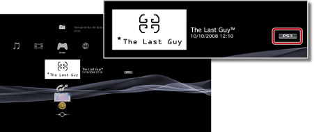

Juego > Jugar a juegos descargados de PlayStation®Store > Utilización de juegos descargados
Utilización de juegos descargados
Puede utilizar los juegos que ha descargado (comprados o gratuitos) a través de  (PlayStation®Store). El modo de jugar depende del tipo de juego. La información sobre el tipo de juego aparece al lado del icono del juego.
(PlayStation®Store). El modo de jugar depende del tipo de juego. La información sobre el tipo de juego aparece al lado del icono del juego.

Nota
Para clasificar los juegos por tipo, seleccione el icono de un juego, pulse el botón  y, a continuación, seleccione [Ordenar por] > [Formato] en el menú de opciones.
y, a continuación, seleccione [Ordenar por] > [Formato] en el menú de opciones.
Jugar a software de formato PlayStation®3
Por lo general, puede jugar a software de formato PlayStation®3 que ha descargado a través de (PlayStation®Store) de la misma manera que el software de formato PlayStation®3 disponible en soportes de disco. Para obtener más información, consulte  (Juego) > [Jugar a software de formato PlayStation®3] en esta guía.
(Juego) > [Jugar a software de formato PlayStation®3] en esta guía.
Jugar a software de formato PlayStation®
Por lo general, puede jugar a software de formato PlayStation® que ha descargado a través de (PlayStation®Store) de la misma manera que el software de formato PlayStation® disponible en soportes de disco. Para obtener más información, consulte (Juego) > [Jugar a software de formato PlayStation®2 / PlayStation®] en esta guía.
Manuales de software
Es posible que pueda consultar el manual del software de formato PlayStation® que ha descargado. Para ver el manual, pulse el botón PS del mando inalámbrico durante la partida y, a continuación, seleccione [Manual de software] en la pantalla que aparece.
Juegos que requieren el intercambio de discos
Algunas aplicaciones de software de formato PlayStation® que se descargan requieren el cambio de los discos. Cuando se reproducen estos juegos en el sistema PS3™, el intercambio de discos se lleva a cabo de forma virtual. Si se muestra un mensaje en el que se le solicita cambiar los discos, pulse el botón PS del mando inalámbrico y, a continuación, seleccione [Cambiar el disco] en la pantalla que aparece. Siga las instrucciones en pantalla para completar la operación.
Seleccione un juego de formato PC Engine o NEOGEO.
Para obtener información detallada sobre la reproducción de juegos en formato PC Engine o NEOGEO, consulte el manual de instrucciones suministrado con el juego. Es posible que el método para la visualización del manual de instrucciones varíe en función del juego. Es posible que los formatos PC Engine y NEOGEO no estén disponibles en función del país o la región.